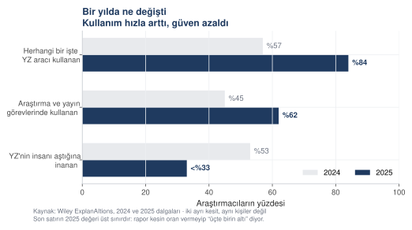
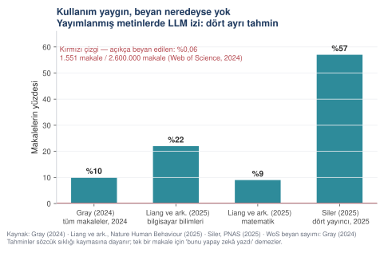

Dr. Mehmet Sevri tarafından akademik eğitim amacıyla tasarlanmıştır. Buradaki istemler, örnekler ve çıktılar öğretim malzemesidir. Yapay zekâ tabanlı araçların kullanımından doğan hatalardan, eksik ya da yanlış bilgiden, uydurma kaynaktan ve bunların yer aldığı çalışmalardan kurs ve hazırlayanı sorumlu tutulamaz. Sorumluluk, aracı kullanan araştırmacıya aittir.
Akademide üretken yapay zekâ
Araştırma sorusunun kurulmasından hakem cevabına kadar bütün araştırma sürecini, çalıştırılmış istemler ve bunların ürettiği yanıtlar üzerinden anlatan bir kurs. Sayfalardaki sayılar ve şekiller bu çalıştırmaların çıktısıdır.
Neden şimdi
Araştırmacıların yapay zekâ kullanımı bir yılda sıçradı. Wiley'nin iki dalgalı ExplanAItions çalışmasında, herhangi bir işinde yapay zekâ aracı kullandığını söyleyenlerin oranı %57'den %84'e çıktı. Araştırma ve yayın görevlerinde kullanım %45'ten %62'ye yükseldi.
Aynı çalışmada ters yönde bir şey daha oldu: yapay zekânın sınanan görevlerde insanı zaten geçtiğine inananların oranı %53'ten üçte birin altına düştü. Kullanım arttıkça beklenti gerçekçileşti.



Bu, araçların kötü olduğu anlamına gelmiyor. Nerede işe yaradığının, nerede yaramadığının anlaşılmaya başlandığı anlamına geliyor. Kurs tam bu ayrımın üzerine kurulu.
Asıl boşluk kullanımda değil, beyanda
Yayımlanmış makalelerde büyük dil modeli izi arayan çalışmalar var. Tahminleri birbirinden çok uzak: Gray'in 2024 makaleleri üzerindeki bibliyometrik çalışması yaklaşık %10 diyor. Liang ve arkadaşlarının Nature Human Behaviour'da yayımlanan çalışması alana göre ayırıyor — bilgisayar bilimlerinde %22'ye kadar, matematikte %9 dolayında. Siler'in PNAS'ta yayımlanan, dört yayıncıdan 7,3 milyon makaleyi tarayan çalışması 2025 için %57 veriyor.
Bu sayılar aynı şeyi ölçmüyor ve hiçbiri "bu makaleyi yapay zekâ yazdı" demiyor. Hepsi sözcük sıklığındaki kaymayı ölçüyor: belirli sözcüklerin kullanım oranı yıllar içinde ne kadar değişti. Tek bir makale için kanıt değiller.
Yine de hepsinin ortak noktası şu: kullanım, beyan edilenden kat kat fazla. Web of Science'ta 2024 yılına ait yaklaşık 2,6 milyon makaleden yalnızca 1.551'inde açık bir yapay zekâ kullanım beyanı var. Yüzde sıfır virgül sıfır altı.

kod/17_kapak_sekilleri.py — veri
noktalarının her biri kaynağıyla birlikte betiğin içinde durur.
Dosya: a02_beyan_acigi.svg
· PNG sürümü

- Boyut
- Wiley ExplanAItions 2024 ve 2025 dalgaları · dört bibliyometrik tahmin
- Pakette
- 17_kapak_sekilleri.py
Sayılar yayımlanmış anket ve bibliyometri çalışmalarından alındı; kurs için üretilmedi. Her veri noktasının kaynağı betiğin içinde kendi satırında yazılıdır. Künyeler 17. bölümdedir.
Altı saatlik atölye sunumu
Bu kursun içeriği, altı saatlik bir atölye için slayt sunumuna da dönüştürüldü. Web tabanlı, kurulum gerektirmez; projeksiyonda ve telefonda okunur.
88 slayt · 7 bölüm · 5 uygulama molası. Klavyeyle gezinir (← →), O tuşu bütün slaytları ızgara olarak gösterir — atlamak istediğiniz bölümü tek tıkla geçersiniz.
Sunum ders malzemesi olarak serbestçe kullanılabilir; kaynak göstermeniz yeterli.
Kurs neyi içeriyor
Bu kurs neyi farklı yapıyor
Yapay zekâ ve akademik yazım üzerine çok sayıda rehber var. Çoğunun ortak eksiği şu: istemi veriyorlar, çıktıyı vermiyorlar. "Şöyle sorun, iyi sonuç alırsınız" deyip geçiyorlar. Oysa bir istemin iyi olup olmadığı, ancak çıktısına bakılarak anlaşılır.
Bu kursta istemler yanıtlarıyla birlikte verilir. Sayfalarda yer alan analiz sonuçları, pakette bulunan veri dosyaları üzerinde çalıştırılmış betiklerin çıktısıdır; şekiller de bu çıktılardan üretilmiştir.
Birinci ilke
İstem, ürettiği yanıtla birlikte sunulur
Kursta 47 istemin yanıtı, istem kutusunun hemen altında yer alır. Beklentiyi karşılamayan yanıtlar da korunmuştur; bir istemin nerede yetersiz kaldığı, nerede işe yaradığı kadar öğreticidir.
İkinci ilke
Her sayı kaynağına bağlıdır
Kursta geçen istatistikler, yanlarında verilen veri ve kodla yeniden üretilebilir. Betikler yerel makinede çalıştırıldığında aynı sayısal sonuçlar elde edilir.
Üçüncü ilke
Yöntem seçimi de bilgidir
Her analizin yanında "bu nedir" ve "neden bu seçildi" notu var. Hangi testin ne zaman kullanılacağını bilmek, testi koşturmaktan daha önemli.
İki örnek alan boyunca ilerliyoruz
Kurs boyunca aynı iki çalışma, bütün aşamalardan geçirilerek örneklenir. Biri teknik, biri sosyal; biri sayısal, biri hem sayısal hem metinsel. Böylece hangi alandan gelirseniz gelin, kendi işinize benzeyen bir örnek bulursunuz.
Örnek A · teknik alan
Web güvenliği — kimlik avı bağlantılarının saptanması
235.795 kayıtlık gerçek bir veri setinden 5.000 satırlık bir altküme. Sınıflandırma, model karşılaştırması, çapraz doğrulama ve kursun temel uyarısı: olağandışı yüksek doğruluk bir başarı göstergesi değil, inceleme gerekçesidir.
Örnek B · sosyal alan
Eğitim bilimleri — ders değerlendirme anketi
Gazi Üniversitesi'nden 5.820 gerçek öğrenci değerlendirmesi, 28 Likert maddesi. Güvenilirlik, faktör analizi, grup karşılaştırmaları, regresyon. Yanında da bir anket atölyesi: ham veriden temiz veriye, açık uçlu yanıtlardan temalara.
Kursun haritası
Kısım I · Temel
1–3. bölümler
Büyük dil modeli nasıl çalışır, neden kaynak uydurur, hangi iş hangi araca verilir. Etik ve beyan kuralları. Ve kursun en çok kullanılacak bölümü: iyi istemin altı parçası.
Kısım II · Araştırmanın başı
4–6. bölümler
Fikri araştırma sorusuna çevirmek. Web of Science, Scopus ve IEEE Xplore için kopyala-yapıştır hazır gelişmiş arama dizgileri. Veri tabanından indirilen kayıt dosyasından (BibTeX) taranabilir bir kaynak listesi kurmak, PDF'lerden veri çıkarmak. Anket tasarımı, veri temizleme, kimliksizleştirme.
Kısım III · Analiz
7–10. bölümler
Hangi analizi hangi soruya? Varsayım denetimi. Betimsel istatistikten faktör analizine, regresyondan lojistik regresyona — hepsi gerçek veri üstünde. Makine öğrenmesi ve veri sızıntısı. Tematik analizin altı aşaması.
Kısım IV · Üretim
11–14. bölümler
Analiz çıktısını yayın kalitesinde şekle ve tabloya çevirmek. Makaleyi bölüm bölüm yazmak — doğru sırayla. Proje önerisi. Hakem raporu ve hakem cevabı.
Ekler
16–17. bölümler
Kursta geçen bütün istemlerin tek sayfada toplandığı istem kütüphanesi: her kalıbın altında doldurulmuş hâli. Yanında veri setleri, çalıştırılabilir kod, elli bir terimlik istatistik sözlüğü ve doğrulanmış kaynak listesi.
Kimin için
Yüksek lisans ve doktora öğrencileri. İlk makalesini yazanlar için baştan sona bir yol. Hangi adımda ne yapılır, hangi araç nerede devreye girer.
Araştırma yapan öğretim üyeleri. Zaten bildiğiniz süreci hızlandıran istemler; ve bu araçların nerede yanıltıcı olduğunu gösteren somut örnekler.
Yöntem dersi veren akademisyenler. Bölümler ders malzemesi olarak kullanılabilir. İki gerçek veri seti CC BY 4.0 lisanslıdır; kod, şekil ve metinler eğitim amacıyla kaynak gösterilerek serbestçe kullanılabilir.
Kurumsal eğitim düzenleyenler. Kurs bir hizmet içi eğitim için hazırlandı; bütün paket indirilip kendi kurumunuzda kullanılabilir.
Paketin içindekiler
Bu site tek bir klasördür. İndirip açabilir, kendi sunucunuzda yayımlayabilir, çevrimdışı kullanabilirsiniz.
| Klasör | İçerik |
|---|---|
veri/web_guvenligi/ |
Kimlik avı veri seti altkümesi — 5.000 satır, 43 sütun (kaynaktaki 56 sütundan seçilmiş) |
veri/sosyal/ |
Gazi ders değerlendirme verisi (5.820 satır) · anket atölyesi dosyaları · açık uçlu yanıtlar |
veri/kimya/ |
Adsorpsiyon deney verisi — ham (215 satır), temiz (201 satır), deney planı, temizleme karar günlüğü |
kod/ |
Yirmi Python betiği, bir de ortak şekil stili dosyası |
cikti/ |
Analiz çıktıları — okunur metin ve JSON olarak |
varlik/sekil/ |
Otuz dört şekil, SVG — biri A0 konferans posteri |
varlik/sekil_png/ |
Aynı şekillerin PNG sürümleri (Word ve sunum için) |
Akademide Üretken Yapay Zekâ — uygulamalı kurs. Hazırlayan: Dr. Mehmet Sevri, Recep Tayyip Erdoğan Üniversitesi. Bu sayfadaki bütün sayısal çıktılar, yanındaki kod ve veri dosyalarıyla yerel olarak üretilmiştir; hiçbiri elle yazılmamıştır.
Kullanılan gerçek veri setleri CC BY 4.0 ile dağıtılmaktadır ve kaynakları ilgili bölümde künyeleriyle verilmiştir. Sentetik veri kullanılan yerler açıkça işaretlenmiştir.
Buradaki istemler ve çıktılar öğretim malzemesidir. Yapay zekâ araçlarının kullanımından doğan hatalardan, uydurma kaynaklardan ve bunların yer aldığı çalışmalardan kurs ve hazırlayanı sorumlu tutulamaz; sorumluluk aracı kullanan araştırmacıya aittir. Sorumluluk ve etik beyanı · Dr. Mehmet Sevri — kişisel sayfa